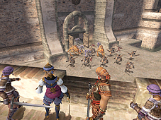
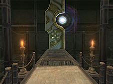
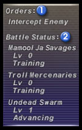
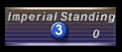
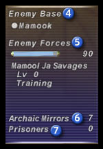

“Besieged” is a defensive battle fought on the Aradjiah continent, the setting of the Treasures of Aht Urhgan expansion disc. Adventurers join the conflict between the Aht Urhgan Empire and the beastmen over a treasure called the “Astral Candescence.” The goal of Besieged is to defend the Imperial capital when the beastmen breach its defenses in search of the Astral Candescence, and to recover the treasure from one of the beastman strongholds in the event it is taken.
The Astral Candescence is the name of the treasure over which the beastmen and the Aht Urhgan Empire are fighting. The mysterious object emanates an unperceivable melody from its place atop an “astral plinth.” This melody has the power to affect both the players and the beastmen.
When the Astral Candescence is in the Empire of Aht Urhgan:
- The Astral Candescence is located on the astral plinth in the Hall of Binding.
- Players will receive an experience bonus while under the effect of Sanction.
The following bonuses can be earned in exchange for Imperial Standing credits:
Latent effect: Regen, Latent effect: Refresh, increased meal duration
These bonuses become more powerful with the number of times Al Zahbi is successfully defended. However, they will revert to their original strength if the Astral Candescence is taken by the beastmen. You can confirm the current number of successive victories by speaking to an Imperial guard in town.
When the Astral Candescence is in a beastman stronghold:
The Astral Candescence is located on an astral plinth.
The beastmen will become more powerful by an amount determined by the number of “archaic mirrors” in the stronghold.
When fighting in a beastman stronghold where the Astral Candescence is located, you will receive an increased number of Imperial Standing credits.
Sanction
You can speak to an Imperial guard to receive Sanction after becoming a mercenary. Defeating monsters with Sanction cast on you will allow you to receive crystals and may increase your Imperial Standing.
You may only receive Sanction in the Treasures of Aht Urhgan areas, but only Signet is available in all previously released areas, so please take care when traveling between regions.
Your Imperial Standing is a measure of how much you have individually contributed to the Empire of Aht Urhgan. Imperial Standing credits can be used in a number of beneficial ways, such as exchanging them for items, or using them to earn transport to staging points.
You can increase your Imperial Standing by defeating monsters that you can gain experience points from.

When the beastmen invade Al Zahbi, the adventurers in town must help protect the Astral Candescence.
When the invasion begins, five NPCs called the “Serpent Generals” seal the entrance to the Hall of Binding where the Astral Candescence is located. In the event that all five generals fall in battle, the seal will be broken, and the beastmen will be able to enter the hall. If the beastmen manage to reach the astral plinth inside, the Astral Candescence will be taken and the battle to defend Al Zahbi will be lost.
Rewards
Experience points and Imperial Standing credits are awarded for participation in Besieged depending on the player’s contribution to the defensive effort. However, these rewards will be reduced by half if the Astral Candescence was taken by the beastmen in the battle.
Please note that the records of your contribution will be reset in the event that you change areas or use the Tractor or Warp spells during Besieged.
Order of Events in Besieged
1. The enemy forces at a beastman stronghold reach level 1 and a contingent sets out for Al Zahbi.
2. The beastman forces march toward the Imperial capital.
3. The beastmen breach Al Zahbi's defenses and besiege the town.
4. The Empire sounds a warning and a call to arms.
5. The Empire is victorious if the adventurers and the Imperial Army manage to keep the Astral Candescence safe and drive the beastmen out of town.
-You can intercept the beastman forces while they are marching toward Al Zahbi.
-The “enemy forces” value determines the level, and thus the strength and type, of beastmen who set out for the Empire.
-In the event that the Empire is successful in defending the capital, the enemy forces of the defeated beastmen’s stronghold will decrease.
-If you are engaging in synthesis, using the “trade” feature, or buying an item when Besieged begins, your actions will be cancelled. A warning message will appear before the beastmen enter the city, so take care when performing the actions described above.
Tips for Success in Besieged
-Deplete the enemy forces
By defeating beastmen in their strongholds, you can deplete their forces. This can also be accomplished by destroying the archaic mirrors located around their bases. Even if the beastmen are already heading toward Al Zahbi, you can intercept their forces and decrease the number of enemies that reach the capital.
-Keep an eye on the Imperial defense
The Imperial defense is an important statistic relating to the defensive facilities and the deployment of mercenaries in Besieged. If the Imperial defense decreases by too great an amount, the Empire may be unable to deploy mercenaries or set up defenses against beastman invasions, making the city much more difficult to protect.
When you notice the Imperial defense start to decrease, you can raise it by giving donations to the Al Zahbi NPC “Gajaad.”
For more information about Imperial defense, speak to an Imperial guard.
In the event that the effort to defend Al Zahbi fails and the beastmen take the Astral Candescence, adventurers will be unable to earn bonus effects from Sanction. In such an event, the Empire of Aht Urhgan will order its subjects to concentrate on recovering the priceless item. The adventurers must then venture into the enemy base and seize the Astral Candescence from its place atop an astral plinth.
Order of Events for Recovery
1. After being taken from Al Zahbi, the Astral Candescence is placed on an astral plinth in the enemy base, and the beastmen and monsters there will receive certain effects.
2. The area where the astral plinth is located will become a battlefield, requiring two key items for entry. These key items will be lost in the event that you log out or leave the area and must be reacquired before entering the battlefield.
3. The battlefield will have no level restriction, but only six people may enter at a time.
4. You can recover the Astral Candescence by defeating all the enemies in the battlefield during the specified amount of time (30 minutes) and checking the item located on the astral plinth.
5. After recovering the Astral Candescence, you will be unable to reenter the astral plinth battlefield.
Falling in battle during the fight to recover the Astral Candescence will result in the loss of experience points. However, even should you fall in battle, the monster(s) in the battlefield will not fully recover, and the accumulated damage will carry over to the next battle.
After Besieged is over, some NPCs in Al Zahbi are taken to the enemy base as prisoners. These NPCs are chosen randomly, and will disappear from town when they are captured. Depending on the NPCs captured, you may lose the ability to purchase goods at certain shops or use the auction house. You can free a captive by acquiring and using the key to their prison.
You can check the status of Besieged by selecting “Besieged” under “Region Info” on the main menu. Please understand that the most recent data may take a short while to be reflected on the map.
Region icons
You can see the current location of the Astral Candescence by viewing region icons. A flashing blue mark in the center of an icon means that the Astral Candescence is located in that region.
Besieged status
Lining up the cursor with a region that does not contain an enemy base will display the following information:

1. Orders: Displays the current orders from the Imperial Army.
2. Battle status: Displays the strength and level of the enemy forces.

3. Imperial Standing: Displays the number of credits you have earned in the service of the Empire.
Enemy base information
Lining up the cursor with a region that contains an enemy base will display the following information:

4. Enemy base: Displays the name of the beastman stronghold.
5. Enemy forces: Displays the strength and state of the enemy forces.
6. Archaic mirrors: Displays the number of archaic mirrors in the enemy base.
7. Prisoners: Displays the number of NPCs held captive in the enemy base.